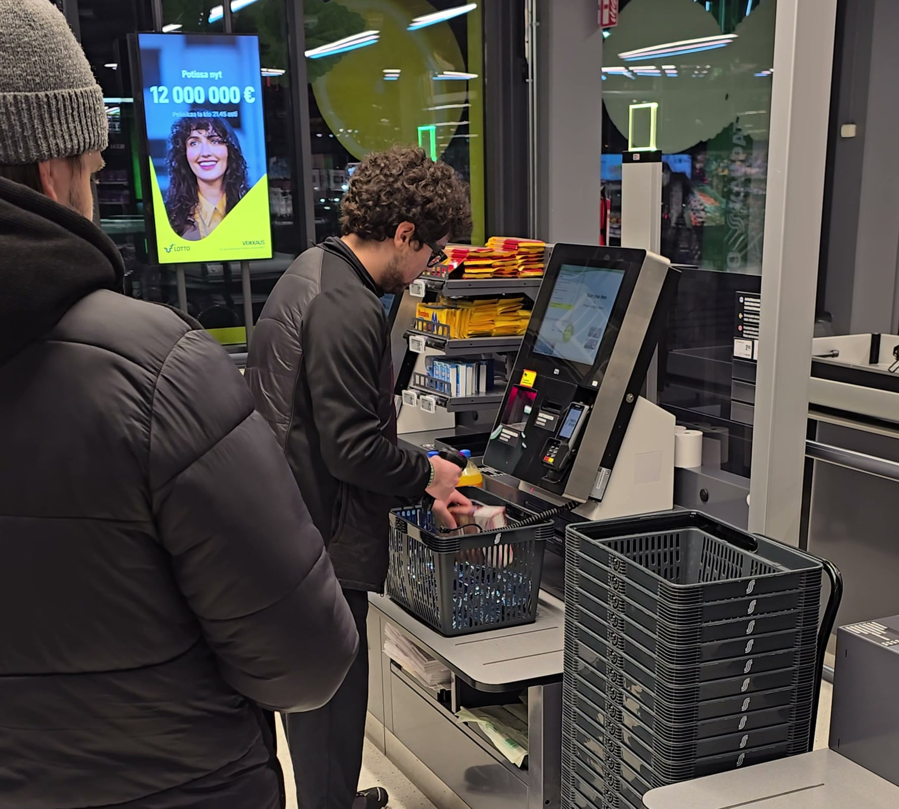

Queue and unload

One hand short


Team

MSc AI and Cybersecurity, University of Udine and Klagenfurt (double degree)

BSc Computer Science, University of Udine. Software Engineer

Software Engineer

MSc Cybersecurity, ETH Zurich. PhD candidate in Computer Science, University of Udine
Meta Glance, Junction 2026An independent project, built with Ray-Ban Meta glasses and the Meta Wearables Device Access Toolkit. Not a product of Meta.